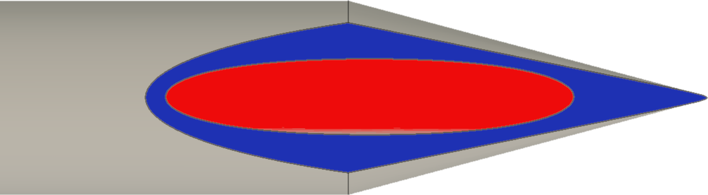

|
Because sharp enough ... usually is not |

|
Vortex Tool

Side view

Perspective view |

Side view |
The Vortex's cutting edge is kept sharp by honing the upper edge (β1). A slip stone (or something similar) is recommended.
The angles denoted below give an overall cutting edge of 25° which is very acute, but works very well when turning into tight spaces (e.g., finials).
|
When it comes to buying tools I use the approach my father taught me. “It's easier to get forgiveness than it is to get permission.” My wife hates it, but it works every time ... well almost. Unknown |
|
General Guidelines |
|||||
|---|---|---|---|---|---|
|
Edge |
Edge Angle |
Relief Angle |
Sharpness |
Comments |
|
| β1 | 5° | n/a |
|
For the top bevel, it is not critical that the angle be exactly this value, but the overall angle (β1 + β2) should be 25°. This surface does need to intersect with the bottom bevel in a way which forms a sharp edge along the entire intersection.  Top view There is a relief ground into the center of the top bevel (the area colored red in the picture to the right). The purpose for this relief is to reduce the surface area which must be honed, speeding the sharpening process (as with the back face of Japanese chisels). The shape of this is not critical, but be sure that at least 1/16" (2mm) of face remains for the cutting (the area colored blue in the picture to the right). |
|
| β2 | 20° | +5° | n/a |
For the bottom bevel, this is circular grind much like if you had used a pencil sharpener to perform the work. A relief can be ground on this heel of the tool (as is done on Single Point Cutting Tools on the metal lathe). If added, +5° is recommended. Be sure that at least 1/8" (3mm) of primary bevel remains. |
|
If grinding this on a high speed grinder or sander, be sure to manage the temperature so that the temper is not lost due to overheating.
| High Carbon Steel |

Temperature control is critical for high carbon steel. Tempering will be lost in the steel if heated until it is blue (~550°F / 300°C). Cool by dipping as needed in water. Dr. Larrin Thomas noted in his book, Knife Engineering: Steel, Heat Treating, and Geometry (2025), The lack of sparks or color changes is no guarantee that the edge was not overheated. Therefore, sparks are not necessarily a sign that heat has or has not been generated in the steel. Color changes can occur from overheating of steel in grinding, but during grinding, the surface is being removed, and the affected volume can be relatively small. Therefore a color change is not always observed. Microhardness measurements of edges sharpened with a belt sander show a drop in hardness at edge. This results from “over-tempering” the edge by heating it above its original tempering temperature. |
| High Speed Steel |
Cool by dipping as needed in water. |
| Steel with Carbide Insert |
It is also recommended to use a high grit wheel for sharpening carbide as lower grits can cause cracks in the edge leading to it being far more crack-ridden and brittle. (Lower grits can be used for shaping the edge -- see also, Grindstones and Other Sharpening Media - Quick Selection Guide.) |

Example icon
Sharpness scales (as shown in the grey icon to the left) are used to indicate the recommended sharpness for the blades noted above. You can click on any of the icons showing the sharpness scale and be redirected to the page describing this more. Lower numbers are duller; higher numbers sharper.
These are general recommendations; you will need to use your own judgment, based on the knive’s intended purpose.